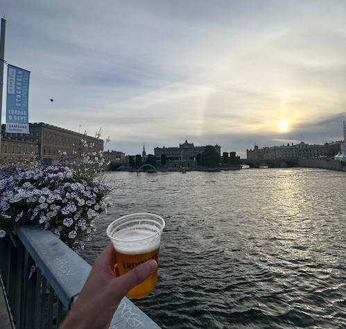

After years of training, I finally undertook my first official half-marathon. Total time of 01:53:05, finishing just at the top 25% of entrants. What else but an (alcohol-free) beer by the palace to finish the afternoon off.

Select a specific month in the top left corner for more adventures